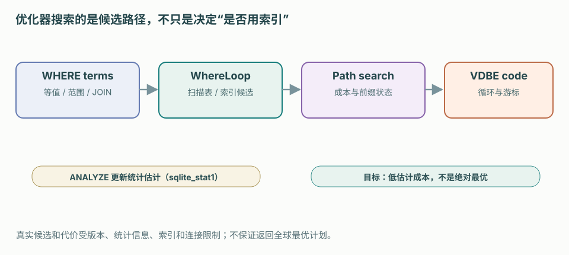
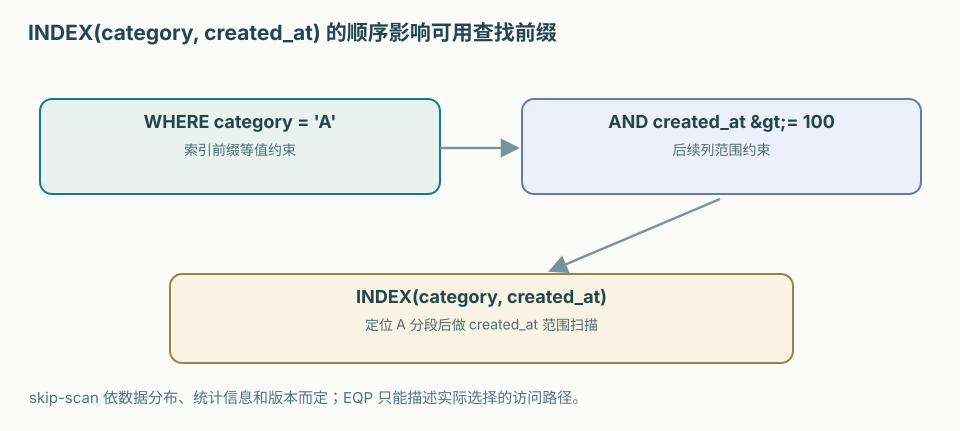
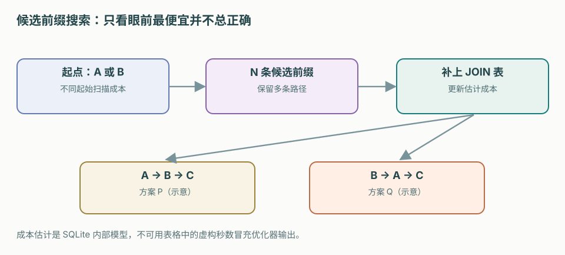

查询规划器：WHERE Loop、代价与连接顺序搜索
为什么写了索引，SQLite 仍可能选择全表扫描？从过滤条件、候选索引、统计信息与 N3 路径搜索建立可检验的模型，而不是凭 EXPLAIN 的一个词断定优化器有错。
阅读提示：可轻点图解打开独立矢量原图；窄屏图解支持横向查看细节。
1. 有索引却不走索引，是不是优化器出错？
假设表 events(category,created_at,payload) 已有组合索引，SQL 是 WHERE category='A' AND created_at >= 100。一个索引确实可以帮助缩小候选记录，但是否有必要使用它，还取决于预计返回多少行、表是否能从索引直接覆盖、回表次数和其他 JOIN 表的顺序。
查询规划器的目标是在 prepare 阶段为整个查询选一套估计成本较低的执行策略，而不是保证每个 WHERE 条件都按索引执行。对于很小的表或会命中大多数行的条件，扫描表可能更便宜。实际运行中的计划可通过 EXPLAIN QUERY PLAN 检查；但官方 EQP 文档明确说明输出格式会变化，不能把计划文案当作稳定 API。

2. 从 WHERE 条件到索引前缀
在 B-Tree 索引 CREATE INDEX idx_events_cat_time ON events(category,created_at) 下，category='A' 可以限定一个等值前缀，随后 created_at >= 100 可在这个范围内进一步定位。若仅使用 WHERE created_at >= 100，不能机械推断一定有相同的索引查找：前导列缺失时，规划器可能考虑 skip-scan，是否可用与重复值分布及统计信息有关。

从源码阅读可搜索 where.c 的 WhereTerm/WhereLoop 分析与候选生成，结合 wherecode.c 观察已选方案如何生成循环指令。不要把教材的伪代码直接当作当前源码原函数签名；不同 SQLite 版本和扩展选项会改变优化分支。
| SQL 条件 | 可能的索引机会 | 需要额外检查 |
|---|---|---|
category = ? | 前导列等值前缀 | 匹配比例与覆盖 |
category = ? AND created_at > ? | 等值前缀 + 后续范围 | 排序需求、选择性 |
created_at > ? | 可能扫描 / skip-scan | 重复度、ANALYZE 统计 |
ORDER BY created_at | 不一定可直接沿组合索引顺序输出 | 前导 category 是否约束 |
3. 多表 JOIN：N3 为什么不是枚举所有 N! 个顺序
多表连接会产生大量不同的嵌套循环顺序，单纯完整排列组合甚至会遇到依赖和 JOIN 语义限制，因此不能对所有查询笼统写“六个表一定测试 720 种策略”。SQLite 的下一代查询规划器（NGQP）使用 N3 思路：考虑不同访问图与候选路径，在扩展路径前缀时保留多条有希望的部分方案。

NGQP 的成本比较包括预估扫描代价、循环重复次数和结果行数等因素；它选择的是估计最优，不保证实际墙钟时间全球最优。在 官方 NGQP 白皮书中可以看到 N3 算法和星形 schema 的案例，SQLite 也会随版本改进启发式。与其复刻旧版 where.c 的单个常数，不如用同一数据集对照实际 SQL 结果、index DDL 与规划输出。
4. ANALYZE 与 sqlite_stat1 怎样改变估计
ANALYZE 收集索引和表统计信息，通常存于 sqlite_stat1。这些信息帮助查询规划器估计某个索引前缀的选择性。应用可以用 PRAGMA optimize 触发合适的统计维护流程，避免在每次执行任意 SQL 前都全量 ANALYZE。
CREATE TABLE events(id INTEGER PRIMARY KEY, category TEXT, created_at INTEGER);
CREATE INDEX idx_events_cat_time ON events(category,created_at);
-- 插入具有明确分布的测试数据之后：
ANALYZE;
SELECT tbl,idx,stat FROM sqlite_stat1 ORDER BY idx;
EXPLAIN QUERY PLAN
SELECT * FROM events WHERE category='A' AND created_at>=100;sqlite_stat4 只有在相关编译选项下才可能存在，不应把它列为所有 SQLite 发行版的默认表。若读者用系统 Python 的 SQLite，本机版本和构建选项会影响统计的精细度，不能硬编码 sqlite_stat4 的行数或某一条 EXPLAIN 文本。
5. 可重复的 Planner 测试：语义固定，计划可变
examples/18_plan_experiment.py 在内存库构造 3000 行具有可控 category 分布的 events，先记录无索引计划，再创建组合索引、运行 ANALYZE 并记录新计划。断言只包括SQL 返回行数和值、sqlite_stat1 存在及索引确实创建，并不以某个计划词句作为测试能否成功的条件。
python3 examples/18_plan_experiment.py
# PASS: query answers invariant; index and statistics created
# PLAN before / PLAN after 仅作本机诊断文本，不做跨版本快照断言。新增的 examples/18_planner.sql 使用固定的小表显示组合索引、ORDER BY、JOIN 的 SQL 结构。若运行环境为 sqlite3 CLI，可使用 .eqp full 扩展观察；不要把 CLI 点命令传给 Python executescript()。
诊断顺序
当计划偏离预期，先确认 SQL 语义、数据基数与分布、实际索引、表统计信息，再决定是否改写查询或补充索引。只看“SCAN”不代表一定慢；只看“SEARCH”也不代表一定快。
6. 把查询规划结论写成可审计报告
建议保留四份证据
- 目标 SQLite
sqlite3_libversion()、表 schema 与全部索引； - 测试数据的分布摘要，例如每个 category 的计数；
- 优化前后同一 SQL 的结果正确性与 EQP 输出；
- 如果要做性能结论，使用多次运行、固定缓存条件与统计方法，而不是捏造“优化 50%”。
自测：为什么组合索引 (A,B) 不等于 (B,A)？
B-Tree 中的字典序先按第一列分组。筛选 A 的等值条件可以有效定位该前缀，随后沿 B 范围查找；只有 B 条件时不一定拥有等价查找路径，是否可 skip-scan 还需要统计信息与规划器支持。
下一章关注函数回调：SQL 里看似简单的 myfunc(x) 如何绑定并在 VDBE 执行期被计算。
资料及版本边界
WhereLoop、N3、统计模型和生成的 EXPLAIN 字符串属于持续优化的内部实现。图用于解释因果而非表示精确代价值或跨版本稳定的执行计划。
- The SQLite Query Optimizer Overview · SQLite 官方
- The Next-Generation Query Planner · SQLite 官方
- EXPLAIN QUERY PLAN · SQLite 官方
- The SQLite Query Planner · SQLite 官方
- ANALYZE Command · SQLite 官方